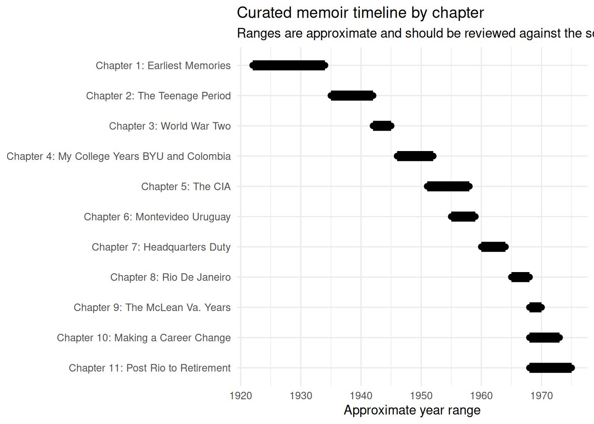

Timeline
The timeline below uses curated chapter date ranges from data/chapter_metadata.csv, not raw year extraction alone.
That distinction matters. The OCR/RDS rebuild now recovers years, but a memoir chapter can mention years outside the life period being narrated. For example, a childhood chapter may mention a later anniversary, a publication date, or a retrospective comment. Those years are useful evidence, but they should not automatically define the chapter’s time range.
Chapter date ranges
How to read this
- Start/end years are human-curated approximations based on the chapter’s main narrative period.
- Year candidates are machine-detected years found inside the OCR text.
- A candidate year outside the curated range is not automatically wrong; it may be historical background, a retrospective reference, or OCR noise.
- Chapter 12 is excluded from the chart because it is the synthetic full-text aggregate.
| chapter | chapter_title | approx_start_year | approx_end_year | life_stage | primary_locations | word_count | year_count | year_candidates |
|---|---|---|---|---|---|---|---|---|
| 1 | Earliest Memories | 1922 | 1934 | Childhood and early adolescence | Idaho Falls, ID; Mesa, AZ; Pomona, CA | 3695 | 15 | 1916; 1917; 1918; 1924; 1926; 1927; 1928; 1977; 1929; 1930; 1932; 1940; 1933; 1934; 1935 |
| 2 | The Teenage Period | 1935 | 1942 | Teenage years, early work, first marriage | Idaho Falls, ID; Pomona, CA; Salt Lake City, UT | 3896 | 11 | 1934; 1980; 1936; 1937; 1939; 1940; 1988; 1941; 1942; 1943; 1945 |
| 3 | World War Two | 1942 | 1945 | Military service | U.S. Navy; Treasure Island; Logan; Corpus Christi; Quonset Point; USS Wasp; Pacific theater | 2760 | 5 | 1942; 1943; 1944; 1986; 1945 |
| 4 | My College Years BYU and Colombia | 1946 | 1952 | College, remarriage, church service, early family formation | Idaho Falls, ID; Provo, UT; BYU; Colombia | 4368 | 9 | 1946; 1947; 1948; 1939; 1932; 1949; 1950; 1953; 1952 |
| 5 | The CIA | 1951 | 1958 | Early intelligence career | Washington, DC area; Munich; Europe; CIA assignments | 6498 | 14 | 1947; 1939; 1950; 1952; 1951; 1954; 1936; 1953; 1955; 1943; 1882; 1860; 1835; 1845 |
| 6 | Montevideo Uruguay | 1955 | 1959 | Foreign service assignment | Montevideo, Uruguay; Paraguay; Brazil/Argentina border region | 3963 | 10 | 1955; 1956; 1957; 1969; 1958; 1930; 1940; 1950; 1959; 1982 |
| 7 | Headquarters Duty | 1960 | 1964 | Headquarters and family life | Washington, DC area; Virginia; Utah/California home leave | 3974 | 7 | 1960; 1961; 1963; 1965; 1962; 1950; 1964 |
| 8 | Rio De Janeiro | 1965 | 1968 | Foreign service assignment | Rio de Janeiro, Brazil | 3157 | 3 | 1965; 1966; 1988 |
| 9 | The McLean Va. Years | 1968 | 1970 | Family and career in Virginia | McLean, VA; Washington, DC area | 1321 | 2 | 1964; 1968 |
| 10 | Making a Career Change | 1968 | 1973 | Personnel management career transition | Washington, DC area; CIA personnel management staff | 2726 | 5 | 1968; 1973; 1969; 1971; 1972 |
| 11 | Post Rio to Retirement | 1968 | 1975 | Later career and retirement transition | Washington, DC area; Virginia; later family/travel locations | 3580 | 9 | 1968; 1974; 1969; 1970; 1972; 1971; 1973; 1955; 1975 |